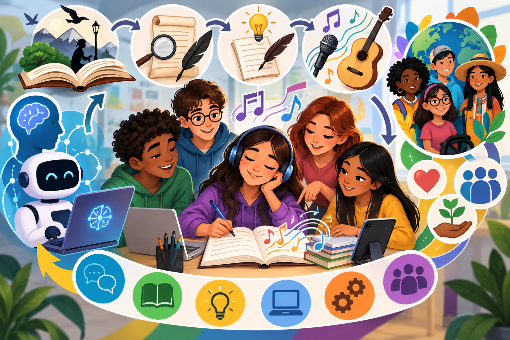

Propósito

La secuencia didáctica sobre el género lírico promueve aprendizajes significativos al favorecer la comprensión de la musicalidad, la rima y las figuras retóricas como recursos para expresar ideas, emociones y experiencias, así como la capacidad de interpretar diversos sentidos en los textos y relacionarlos con sus contextos socioculturales. Mediante la lectura, el análisis, la creación y la musicalización de composiciones poéticas, los estudiantes fortalecen competencias interpretativas, comunicativas, creativas, colaborativas y digitales, participando activamente en la planificación, revisión y mejora de sus producciones. En este proceso, la Inteligencia Artificial Generativa actúa como una herramienta de mediación pedagógica que apoya al docente en el diseño de recursos, actividades e instrumentos de evaluación, y a los estudiantes en la revisión de sus textos y la musicalización de sus creaciones, sin sustituir el pensamiento crítico, la creatividad ni la autoría, sino ampliando las oportunidades de experimentación, retroalimentación y aprendizaje. Asimismo, la propuesta reconoce la diversidad cultural, cognitiva y de intereses del aula, promoviendo una experiencia inclusiva, participativa y contextualizada que fortalece la expresión emocional, la apreciación estética y el desarrollo de competencias del siglo XXI, como la comunicación, la alfabetización digital, la resolución creativa de problemas y el trabajo colaborativo.